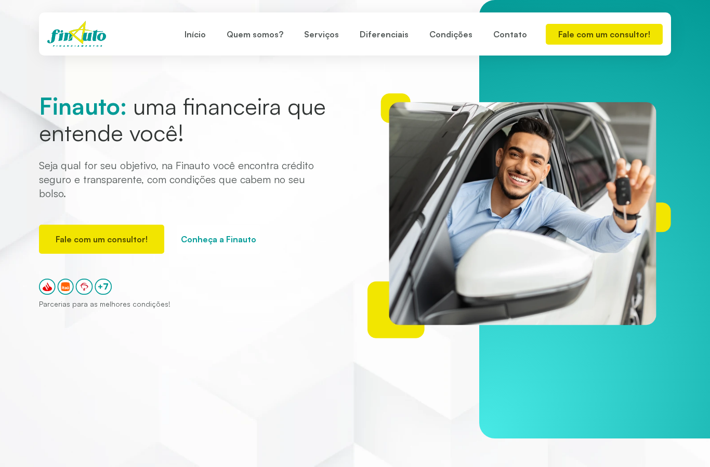
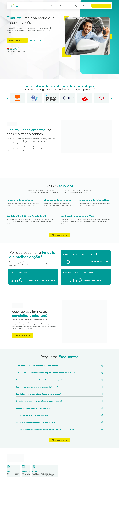

Sistema de Investigação de Marca e Identidade Online
https://finautofinanciamentos.com.br/
Prioridade: MEDIUM · Cenário: B_AMBIGUOUS_COMMUNICATION · Revisão humana: PENDING
O site da Finauto Financiamentos atua no segmento de financiamento de veículos e exibe o logotipo oficial atual do Banco BV em contexto multibanco/parcerias. A identidade visual própria predomina amplamente, descartando tentativa de personificação direta. No entanto, por se tratar de atividade de intermediação de crédito sem apresentação de CNPJ e sem a declaração obrigatória de correspondente bancário (Resolução CMN nº 4.935/2021), a comunicação permanece em conformidade ambígua, demandando revisão. [Revisor: CONFIRM] A Finauto Financiamentos opera como promotora/intermediadora de crédito veicular e exibe o logotipo do Banco BV em uma seção de parceiros multibanco. Embora a identidade visual própria predomine e não haja personificação direta ou overbranding exclusivo, o site omite dados regulatórios essenciais para correspondentes no país (como CNPJ, razão social formal e menção explícita à condição de correspondente bancário nos termos da Resolução CMN nº 4.935/2021). A classificação REVIEW_REQUIRED com prioridade MEDIUM é pertinente e está confirmada.


| Ref | Tipo | Local | Conteúdo |
|---|---|---|---|
| E-URL | domain | url | URL final: https://finautofinanciamentos.com.br/ (domínio: finautofinanciamentos.com.br) |
| E-DISC-001 | text | search_index | Índice de busca (grounding): finautofinanciamentos.com.br — **URL:** `https://finautofinanciamentos.com.br` | **Tipo / Atividade:** Plataforma/revenda intermediadora de venda e financiamento de veículos (de 1973 a 0 km) | **Uso da Marca:** Exibe em destaque visual o **logotipo do Banco BV** em azul, além de promover condições de "feirões de veículos" e captação de clientes para refinanciamento e compra direta via WhatsApp | **Conformidade (CNPJ / Correspondente):** Utiliza as marcas bancárias para transmitir credibilidade de canal de crédito, porém não apresenta as informações institucionais regulatórias exigidas pela Resolução CMN nº 4.935/2021 |
| E-SHOT-VIEWPORT | screenshot | viewport | evidence/Cb63370e515/attempt-1/viewport.png (sha256 b865946176754c0e…) |
| E-SHOT-FULL | screenshot | page | evidence/Cb63370e515/attempt-1/fullpage.png (sha256 79cf28f59b63e3fb…) |
| E-TITLE | title | head | Finauto Financiamentos - Finauto |
| E-META-1 | meta | head | og:site_name: Finauto |
| E-META-2 | meta | head | og:title: Finauto Financiamentos - Finauto |
| E-META-3 | meta | head | og:description: Fale com um consultor! Finauto: uma financeira que entende você! Seja qual for seu objetivo, na Finauto você encontra crédito seguro e transparente, com condições que cabem no seu bolso. Fale com um consultor! Conheça a Finauto Parcerias para as melhores condições! Parceira das melhores instituições financeiras do país para garantir segurança e as melhores […] |
| E-CANONICAL | meta | head | https://finautofinanciamentos.com.br/ |
| E-HEAD-1 | heading | page | Finauto: uma financeira que entende você! |
| E-HEAD-2 | heading | page | Parceira das melhores instituições financeiras do país para garantir segurança e as melhores condições para você. |
| E-HEAD-3 | heading | page | Finauto Financiamentos, há 21 anos realizando sonhos. |
| E-HEAD-4 | heading | page | Nossos serviços |
| E-HEAD-5 | heading | page | Financiamento de veículos |
| E-HEAD-6 | heading | page | Refinanciamento de Veículos |
| E-HEAD-7 | heading | page | Venda Direta de Veículos Novos |
| E-HEAD-8 | heading | page | Capital de Giro PRONAMPE pelo BDMG |
| E-HEAD-9 | heading | page | Seu Imóvel Trabalhando por Você |
| E-HEAD-10 | heading | page | Por que escolher a Finauto é a melhor opção? |
| E-HEAD-11 | heading | page | Quer aproveitar nossas condições exclusivas? |
| E-HEAD-12 | heading | page | Perguntas Frequentes |
| E-HEAD-13 | heading | page | Quem pode solicitar um financiamento com a Finauto? |
| E-HEAD-14 | heading | page | Quais são os documentos necessários para o financiamento de veículos? |
| E-HEAD-15 | heading | page | Posso financiar veículos usados ou de modelos antigos? |
| E-FOLD | text | viewport (acima da dobra) | Início Quem somos? Serviços Diferenciais Condições Contato Fale com um consultor! Finauto: uma financeira que entende você! Seja qual for seu objetivo, na Finauto você encontra crédito seguro e transparente, com condições que cabem no seu bolso. Fale com um consultor! Conheça a Finauto Parcerias para as melhores condições! |
| E-NAV | nav | header | Início <https://finautofinanciamentos.com.br/#inicio> | Quem somos? <https://finautofinanciamentos.com.br/#sobre> | Serviços <https://finautofinanciamentos.com.br/#servicos> | Diferenciais <https://finautofinanciamentos.com.br/#diferenciais> | Condições <https://finautofinanciamentos.com.br/#condicoes> | Contato <https://finautofinanciamentos.com.br/#contato> |
| E-CTA-1 | cta | page | Fale com um consultor! <https://api.whatsapp.com/send?phone=5535997495097&text=Ol%C3%A1%21%20Vim%20pelo%20site%2C%20gostaria%20de%20fazer%20uma%20simula%C3%A7%C3%A3o.> |
| E-CTA-2 | cta | page | Fale com um consultor! <https://api.whatsapp.com/send?phone=5535997495097&text=Ol%C3%A1%21%20Vim%20pelo%20site%2C%20gostaria%20de%20fazer%20uma%20simula%C3%A7%C3%A3o.> |
| E-CTA-3 | cta | page | Conheça a Finauto <https://finautofinanciamentos.com.br/#sobre> |
| E-CTA-4 | cta | page | Fale com um consultor! <https://api.whatsapp.com/send?phone=5535997495097&text=Ol%C3%A1%21%20Vim%20pelo%20site%2C%20gostaria%20de%20fazer%20uma%20simula%C3%A7%C3%A3o.> |
| E-CTA-5 | cta | page | Fale com um consultor! <https://api.whatsapp.com/send?phone=5535997495097&text=Ol%C3%A1%21%20Vim%20pelo%20site%2C%20gostaria%20de%20fazer%20uma%20simula%C3%A7%C3%A3o.> |
| E-CTA-6 | cta | page | Fale com um consultor! <https://api.whatsapp.com/send?phone=5535997495097&text=Ol%C3%A1%21%20Vim%20pelo%20site%2C%20gostaria%20de%20fazer%20uma%20simula%C3%A7%C3%A3o.> |
| E-CONTACT-1 | contact | page | Fale com um consultor! <https://api.whatsapp.com/send?phone=5535997495097&text=Ol%C3%A1%21%20Vim%20pelo%20site%2C%20gostaria%20de%20fazer%20uma%20simula%C3%A7%C3%A3o.> |
| E-CONTACT-2 | contact | page | Fale com um consultor! <https://api.whatsapp.com/send?phone=5535997495097&text=Ol%C3%A1%21%20Vim%20pelo%20site%2C%20gostaria%20de%20fazer%20uma%20simula%C3%A7%C3%A3o.> |
| E-CONTACT-3 | contact | page | Fale com um consultor! <https://api.whatsapp.com/send?phone=5535997495097&text=Ol%C3%A1%21%20Vim%20pelo%20site%2C%20gostaria%20de%20fazer%20uma%20simula%C3%A7%C3%A3o.> |
| E-CONTACT-4 | contact | page | Fale com um consultor! <https://api.whatsapp.com/send?phone=5535997495097&text=Ol%C3%A1%21%20Vim%20pelo%20site%2C%20gostaria%20de%20fazer%20uma%20simula%C3%A7%C3%A3o.> |
| E-CONTACT-5 | contact | page | Fale com um consultor! <https://api.whatsapp.com/send?phone=5535997495097&text=Ol%C3%A1%21%20Vim%20pelo%20site%2C%20gostaria%20de%20fazer%20uma%20simula%C3%A7%C3%A3o.> |
| E-CONTACT-6 | contact | page | Whatsapp: <https://api.whatsapp.com/send?phone=5535997495097&text=Ol%C3%A1%21%20Vim%20pelo%20site%2C%20gostaria%20de%20fazer%20uma%20simula%C3%A7%C3%A3o.> |
| E-CONTACT-7 | contact | page | Whatsapp: <https://api.whatsapp.com/send?phone=5535997495097&text=Ol%C3%A1%21%20Vim%20pelo%20site%2C%20gostaria%20de%20fazer%20uma%20simula%C3%A7%C3%A3o.> |
| E-CONTACT-8 | contact | page | Instagram <http://instagram.com.br/finautofin> |
| E-CONTACT-9 | contact | page | Instagram <http://instagram.com.br/finautofin> |
| E-IMG-1 | image | page (acima da dobra) | imagem alt='' src=https://finautofinanciamentos.com.br/wp-content/uploads/2024/11/logotipo-finauto-verde.svg (113x51, acima da dobra) |
| E-IMG-2 | image | page | imagem alt='Logotipo do Banco Itaú com o nome da marca em branco sobre fundo laranja.' src=https://finautofinanciamentos.com.br/wp-content/uploads/2024/11/logotipo-banco-itau.svg (174x118, abaixo da dobra) |
| E-IMG-3 | image | page | imagem alt='Logotipo do Banco BV, com as letras BV em azul e detalhes em tons claros.' src=https://finautofinanciamentos.com.br/wp-content/uploads/2024/11/logotipo-banco-bv.svg (173x118, abaixo da dobra) |
| E-IMG-4 | image | page | imagem alt='Logotipo do Banco Pan em preto com um ícone azul claro.' src=https://finautofinanciamentos.com.br/wp-content/uploads/2024/11/logotipo-banco-pan.svg (174x118, abaixo da dobra) |
| E-IMG-5 | image | page | imagem alt='Logotipo do Banco Safra, com o brasão em azul escuro e o nome da instituição.' src=https://finautofinanciamentos.com.br/wp-content/uploads/2024/11/logotipo-banco-safra.svg (174x118, abaixo da dobra) |
| E-IMG-6 | image | page | imagem alt='Logotipo do Banco Santander, em vermelho, com o ícone estilizado da chama.' src=https://finautofinanciamentos.com.br/wp-content/uploads/2024/11/logotipo-banco-santander.svg (173x118, abaixo da dobra) |
| E-IMG-7 | image | page | imagem alt='Logotipo do Banco Bradesco em vermelho com o ícone característico da marca.' src=https://finautofinanciamentos.com.br/wp-content/uploads/2024/11/logotipo-bradesco.svg (174x118, abaixo da dobra) |
| E-IMG-8 | image | page | imagem alt='logotipo-banco-daycoval]' src=data:image/gif;base64,R0lGODdhAQABAPAAAMPDwwAAACwAAAAAAQABAAACAkQBADs= (1x1, abaixo da dobra) |
| E-IMG-9 | image | page | imagem alt='logotipo-banco-carbank' src=data:image/gif;base64,R0lGODdhAQABAPAAAMPDwwAAACwAAAAAAQABAAACAkQBADs= (1x1, abaixo da dobra) |
| E-IMG-10 | image | page | imagem alt='Logotipo da Finauto Financiamentos em branco com destaque para a letra "A" em amarelo.' src=data:image/svg+xml;base64,PHN2ZyB4bWxucz0iaHR0cDovL3d3dy53My5vcmcvMjAwMC9zdmciIHdpZHRoPSIyMDciIGhlaWdodD0iOTIiIHZpZXdCb3g9IjAgMCAyMDcgOTIiPjxyZWN0IHdpZHRoPSIxMDAlIiBoZWlnaHQ9IjEwMCUiIHN0eWxlPSJmaWxsOi (207x92, abaixo da dobra) |
| E-TXT-001 | text | page | Parceira das melhores instituições financeiras do país para garantir segurança e as melhores condições para você. |
| E-TXT-002 | text | page | Atendimento humanizado e transparente |
| E-TXT-003 | text | page | Whatsapp: |
| E-TXT-004 | text | page | Endereço: |
| E-TXT-005 | text | page | Rua Chagas Dória, 373, Centro, Lavras/MG, CEP: 37200-042 |
| E-TXT-006 | text | page | 2026 – Todos os direitos reservados Finauto Financiamentos | Um site desenvolvido por Relanz LTDA |
| Dimensão | Sinal | Achado | Refs |
|---|---|---|---|
| VISUAL_IDENTITY | LEGITIMATE | Predomínio total da identidade visual própria da Finauto Financiamentos (cores verde e amarela), sem mimetismo visual da identidade institucional do Banco BV. | E-SHOT-VIEWPORT E-SHOT-FULL E-IMG-1 |
| DECLARED_COMMERCIAL_IDENTITY | NEUTRAL | Identificação comercial sob a marca Finauto Financiamentos, com endereço físico detalhado, mas sem informar CNPJ ou Razão Social. | E-HEAD-1 E-HEAD-3 E-TXT-005 E-TXT-006 |
| CORRESPONDENT_TRANSPARENCY | CONFUSION | A empresa atua intermediando financiamentos e veicula parcerias bancárias, mas não exibe a declaração regulatória de correspondente bancário exigida pelo Banco Central (Res. CMN 4.935/2021). | E-HEAD-2 E-TXT-001 E-SHOT-FULL |
| LOGO_USAGE | NEUTRAL | Exibição do logotipo oficial atual do Banco BV ('BV banco' em azul) inserido em um carrossel de parceiros bancários em conjunto com Itaú, PAN, Safra, Santander e Bradesco. | E-IMG-3 E-SHOT-FULL |
| INSTITUTIONAL_LANGUAGE | NEUTRAL | Comunicação em terceira pessoa indicando parceria comercial ('Parceira das melhores instituições financeiras do país'), sem fingir ser o próprio banco. | E-HEAD-2 E-TXT-001 |
| SERVICE_JOURNEY | NEUTRAL | Captação de leads via WhatsApp e simulação direta de crédito veicular com equipe de consultores da própria Finauto. | E-CTA-1 E-CONTACT-6 E-SHOT-FULL |
| CONSUMER_CONFUSION | NEUTRAL | O consumidor compreende que está interagindo com a Finauto, mas a ausência de dados cadastrais e de esclarecimento formal do papel de correspondente deixa a natureza da relação jurídica ambígua. | E-SHOT-FULL E-HEAD-2 |
O site da Finauto Financiamentos atua no segmento de financiamento de veículos e exibe o logotipo oficial atual do Banco BV em contexto multibanco/parcerias. A identidade visual própria predomina amplamente, descartando tentativa de personificação direta. No entanto, por se tratar de atividade de intermediação de crédito sem apresentação de CNPJ e sem a declaração obrigatória de correspondente bancário (Resolução CMN nº 4.935/2021), a comunicação permanece em conformidade ambígua, demandando revisão.
Empresa identificada na página sem declaração de relação de correspondente; anunciar produtos da marca não comprova vínculo.
| Tipo | Valor | Ref | Contexto |
|---|---|---|---|
| domain | finautofinanciamentos.com.br | E-URL | |
| legal_name | Relanz LTDA | E-TXT-006 | |
| trade_name | Finauto | E-META-2 | |
| Índice de busca (grounding): finautofinanciamentos.com.br — **URL:** `https://finautofinanciamentos.com.br` | **Tipo / Atividade:** Plataforma/revenda intermediadora de venda e financiamento de veícul | E-DISC-001 | ||
| Fale com um consultor! <https://api.whatsapp.com/send?phone=5535997495097&text=Ol%C3%A1%21%20Vim%20pelo%20site%2C%20gostaria%20de%20fazer%20uma%20simula%C3%A7%C3%A3o.> | E-CONTACT-1 |
Mapeamento indicativo para apoio à auditoria. Não constitui conclusão regulatória; a decisão definitiva pertence à auditoria.
Fonte: NORMATIVE
Art. 14. O contrato de correspondente deve estabelecer: [...] II - vedação à utilização, pelo contratado, de logomarca ou de outros atributos que sejam similares aos adotados pela instituição contratante em suas agências, postos de atendimento, sítio eletrônico na internet, aplicativo ou outras plataformas de comunicação em rede;
Evidência observada: E-IMG-1 E-SHOT-FULL E-SHOT-VIEWPORT
Fonte: NORMATIVE
Art. 14. O contrato de correspondente deve estabelecer: [...] III - divulgação ao público, pelo contratado, de sua condição de prestador de serviços à instituição contratante, identificada pelo nome com que é conhecida no mercado, com descrição dos produtos e serviços oferecidos e canais de contato da instituição contratante, inclusive de sua ouvidoria, em local visível, em destaque e em formato legível, por meio de: a) sítio eletrônico do correspondente na internet, acessível na página inicial; b) aplicativo e outras plataformas de comunicação em rede do correspondente; [...]
Hipótese: Divulgação ao público da condição de prestador de serviços/parceria ausente, insuficiente, ambígua ou sem destaque. A norma disciplina correspondentes contratados; o responsável não foi identificado como correspondente.
Evidência observada: E-HEAD-2 E-SHOT-FULL E-TXT-001 E-TXT-005 E-TXT-006
Informação faltante:
Fonte: NORMATIVE
Art. 3º O correspondente atua por conta e sob as diretrizes da instituição contratante, que assume inteira responsabilidade pelo atendimento prestado aos clientes e usuários por meio do contratado.
Evidência observada: —
Se o responsável não for correspondente contratado, os indícios podem caracterizar uso indevido de marca ou fraude, fora do escopo da Res. 4.935: avaliar encaminhamento às áreas jurídica/segurança.
Limitações: requisitos contratuais/internos não fornecidos: mapeamento limitado ao texto normativo
Decisão: CONFIRM → REVIEW_REQUIRED / MEDIUM
A Finauto Financiamentos opera como promotora/intermediadora de crédito veicular e exibe o logotipo do Banco BV em uma seção de parceiros multibanco. Embora a identidade visual própria predomine e não haja personificação direta ou overbranding exclusivo, o site omite dados regulatórios essenciais para correspondentes no país (como CNPJ, razão social formal e menção explícita à condição de correspondente bancário nos termos da Resolução CMN nº 4.935/2021). A classificação REVIEW_REQUIRED com prioridade MEDIUM é pertinente e está confirmada.
| Tema | Severidade | Questionamento | Refs |
|---|---|---|---|
| Nenhum questionamento | |||
| Fonte | Consulta / hipótese | URL original | Título / trecho |
|---|---|---|---|
| grounding | Objetivo: Revendas de seminovos e lojas multimarcas que divulgam financiamento da marca.
Execute no Google Search as seguintes consultas (dorks):
- "Banco BV" financiamento (loja OR revenda OR seminovos OR multimarcas) veículos -site:bv.com.br -site:bancobv.com.br -site:bvfinanceira.com.br -site:bvinvestimentos.com.br -site:napista.com.br -site:bvopen.com.br -site:meufinanciamentosolar.com.br -site:votorantim.com.br -site:vam.com.br -site:reclameaqui.com.br -site:jusbrasil.com.br -site:jus.br
- "bv financeira" (seminovos OR multimarcas OR revenda) financiamento -site:bv.com.br -site:bancobv.com.br -site:bvfinanceira.com.br -site:bvinvestimentos.com.br -site:napista.com.br -site:bvopen.com.br -site:meufinanciamentosolar.com.br -site:votorantim.com.br -site:vam.com.br -site:reclameaqui.com.br -site:jusbrasil.com.br -site:jus.br
- ("financiamos" OR "trabalhamos com" OR "financie") ("bv financeira" OR "Banco BV") veículos -site:bv.com.br -site:bancobv.com.br -site:bvfinanceira.com.br -site:bvinvestimentos.com.br -site:napista.com.br -site:bvopen.com.br -site:meufinanciamentosolar.com.br -site:votorantim.com.br -site:vam.com.br -site:reclameaqui.com.br -site:jusbrasil.com.br -site:jus.br
Liste de forma abrangente as páginas públicas encontradas (até 12 resultados distintos), informando para cada uma o nome do estabelecimento/perfil, a URL e como a marca é utilizada (destaque visual, título, feirão, simulador, redes sociais e se há ou não identificação clara de CNPJ e condição de correspondente bancário). H2-product:financiamento de carro e multimarcas | https://finautofinanciamentos.com.br/ | finautofinanciamentos.com.br **URL:** `https://finautofinanciamentos.com.br` | **Tipo / Atividade:** Plataforma/revenda intermediadora de venda e financiamento de veículos (de 1973 a 0 km) | **Uso da Marca:** Exibe em destaque visual o **logotipo do Banco BV** em azul, além de promover condições de "feirões de veículos" e captação de clientes para refinanciamento e compra direta via WhatsApp | **Conformidade (CNPJ / Correspondente):** Utiliza as marcas bancárias para transmitir credibilidade de canal de crédito, porém não apresenta as informações institucionais regulatórias exigidas pela Resolução CMN nº 4.935/2021 |
Original: https://finautofinanciamentos.com.br/
Final: https://finautofinanciamentos.com.br/
| Artefato | Caminho | SHA-256 | Bytes |
|---|---|---|---|
| screenshot_viewport | evidence/Cb63370e515/attempt-1/viewport.png | b865946176754c0e749947e9459a864ad4afcb1a0a32d33138b80cc900e814c6 | 439448 |
| screenshot_full | evidence/Cb63370e515/attempt-1/fullpage.png | 79cf28f59b63e3fb42e8bce5453649ced103a0e854df24e0d88077abdba1e77a | 744100 |
| html | evidence/Cb63370e515/attempt-1/page.html.txt | f0dedffaa999938ea9091d72cbdf11b3180af3c4209c6cfc1ae66215a026b748 | 346851 |
| text | evidence/Cb63370e515/attempt-1/text.txt | 6f305c94d5a8865ae1ccd726a1e991efda7fea5dfb27e5dc55f43017d2b349de | 3593 |
| page_data | evidence/Cb63370e515/attempt-1/page.json | 873726b72095a253ec1cdf8de11d480685d9cb77503d1f9ff1184812e00d5025 | 20418 |
| Quando | De | Para | Nota |
|---|---|---|---|
| 2026-11-25T18:12:09+00:00 | DISCOVERED | QUEUED | prioritised (score 1.5) |
| 2026-11-25T19:18:26+00:00 | QUEUED | COLLECTING | |
| 2026-11-25T19:18:31+00:00 | COLLECTING | COLLECTED | |
| 2026-11-25T19:18:31+00:00 | COLLECTED | ANALYZING | |
| 2026-11-25T19:19:07+00:00 | ANALYZING | REVIEWING | |
| 2026-11-25T19:19:55+00:00 | REVIEWING | COMPLETED |